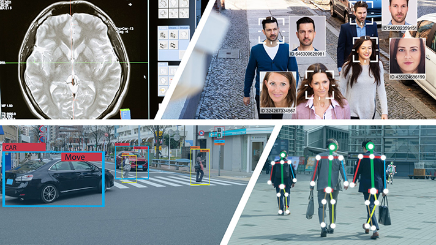

Computer Vision
Computer vision is an interdisciplinary scientific field that deals with how computers can gain high-level understanding from digital images or videos.


WHY ?
Computer vision is a field of artificial intelligence that trains computers to interpret and understand the visual world, i.e to make our task more easier and precise